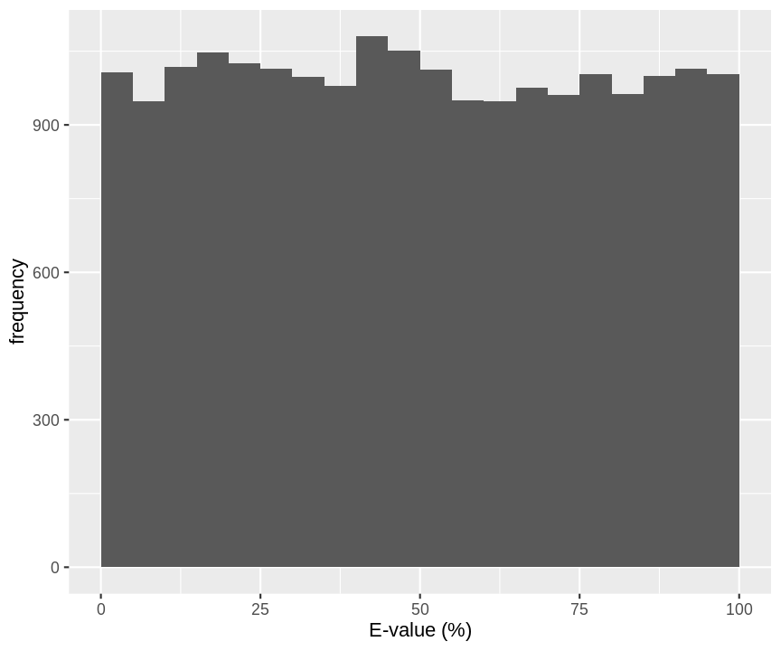
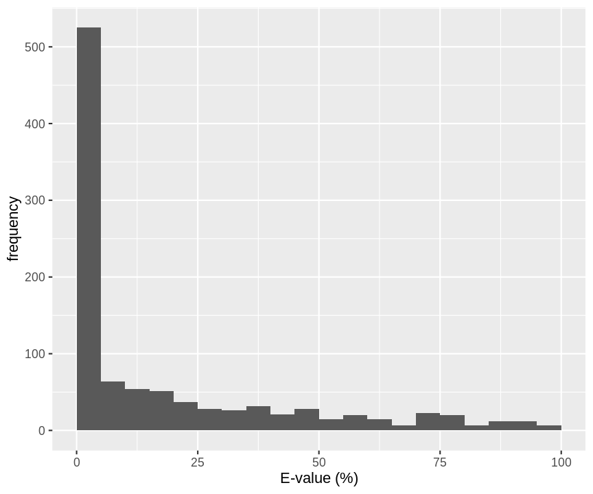
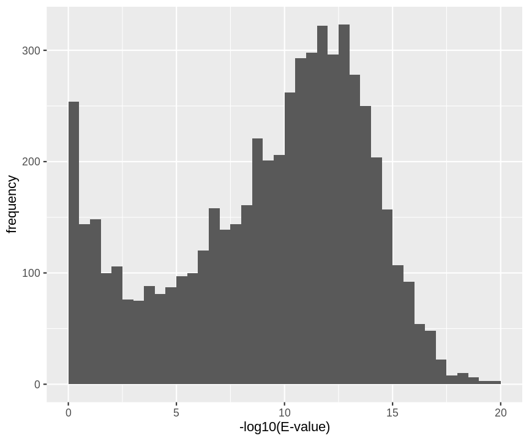

Introduction to TargetDecoy
Lieven Clement
Ghent Universitylibrary(TargetDecoy)
library(ggplot2)1 Introduction

 Slide courtesy to Lennart Martens
Slide courtesy to Lennart Martens
library(TargetDecoy)
library(tidyverse)
#> ── Attaching packages ─────────────────────────────────────── tidyverse 1.3.1 ──
#> ✔ tibble 3.1.7 ✔ dplyr 1.0.9
#> ✔ tidyr 1.2.0 ✔ stringr 1.4.0
#> ✔ readr 2.1.2 ✔ forcats 0.5.1
#> ✔ purrr 0.3.4
#> ── Conflicts ────────────────────────────────────────── tidyverse_conflicts() ──
#> ✖ dplyr::filter() masks stats::filter()
#> ✖ dplyr::lag() masks stats::lag()
data("ModSwissXT")
hlp <- TargetDecoy:::.getDF(ModSwissXT)
names(hlp) <- names(hlp) %>%
str_replace(pattern=":",replacement="_")
hlp <- hlp %>%
mutate(omssa_evalue=as.double(omssa_evalue))2 Concepts
2.1 Basic Statistical Concepts
names(hlp) <- names(hlp) %>% str_replace(pattern="-",replacement = "_")
hlp <- hlp %>% mutate(ms_gf_specevalue=as.double(ms_gf_specevalue))library(mgcv)
#> Loading required package: nlme
#>
#> Attaching package: 'nlme'
#> The following object is masked from 'package:dplyr':
#>
#> collapse
#> This is mgcv 1.8-40. For overview type 'help("mgcv-package")'.
dec <- -log10(hlp$ms_gf_specevalue[hlp$isdecoy]) %>% na.exclude()
tar <- -log10(hlp$ms_gf_specevalue[!hlp$isdecoy]) %>% na.exclude()
breaks <- seq(0,30,.5)
#binWidth <-2
#breaks <- seq(floor(min(c(dec,tar))/binWidth)*binWidth,ceiling(max(c(dec,tar))/binWidth)*binWidth,binWidth)
#code if we register the modes by substracting the mode from the target scores and the decoy scores.
#breaks=seq(-(ceiling(abs(min(c(dec,tar))/binWidth))+.5)*binWidth,(ceiling(max(c(dec,tar))/binWidth)+.5)*binWidth,binWidth)
histDec <- hist(dec,breaks=breaks,plot = FALSE)
histTar <- hist(tar,breaks=breaks,plot=FALSE)
histSam <- hist(c(dec,tar),breaks=breaks, plot = FALSE)
grid<-seq(0,30,.1)
countsTarG<-data.frame(y=histTar$counts-histDec$counts,x=histTar$mids)
countsTarG$y[countsTarG$y<0]<-0
fitTarG<-gam(y~s(x),data=countsTarG,family=poisson)
fitTarGrid<-exp(predict(fitTarG,newdata=data.frame(x=grid)))
countsDec<-data.frame(y=histDec$counts,x=histDec$mids)
fitDec<-gam(y~s(x),data=countsDec,family=poisson)
fitSamBad<-exp(predict(fitDec,newdata=data.frame(x=grid)))*2
plot(histSam,xlab="MS-GF+ Score",ylab="# PSMs",main="Pyrococcus Search",border="white",col="grey",cex.axis=1.5,cex.main=1.5,cex.lab=1.5,ylim=c(0,1500), axes =FALSE)
axis(side=2,at=c(0,750,1500))
axis(side=1,at=c(0,10,20,30))
lines(grid,fitSamBad+fitTarGrid,col="black",lwd=2)
lines(grid,fitSamBad,col="red",lwd=2)
lines(grid,fitTarGrid,col="blue",lwd=2)
Let \(x\) be the PSM score
The scores will follow a mixture distribution:
\[f(x) = \pi_b \mathbin{\color{red}{ f_b(x)}}+(1-\pi_b)\mathbin{\color{blue}{ f_g(x)}},\] We will return a list of PSMs by using the FDR:
\[FDR = E\left[\frac{FP}{TP + FP}\right]\]
- FP: number of false positives, bad hits
- TP: number of true positives, good hits
Our list, typically consists of all PSMs with a score \(x\) above a threshold t.
plot(histSam,xlab="MS-GF+ Score",ylab="# PSMs",main="Pyrococcus Search",border="white",col="grey",cex.axis=1.5,cex.main=1.5,cex.lab=1.5,ylim=c(0,1500), axes =FALSE)
axis(side=2,at=c(0,750,1500))
axis(side=1,at=c(0,10,20,30))
lines(grid,fitSamBad+fitTarGrid,col="black",lwd=2)
lines(grid,fitSamBad,col="red",lwd=2)
lines(grid,fitTarGrid,col="blue",lwd=2)
text(pos=4,10,1430,label=expression(x >= t),col="darkorchid4",cex=2)
rect(10,-10,30,1500,lwd=2,border="darkorchid4")
So we know how many PSMs we return, i.e. TP + FP: \[\text{#PSMs with } x \geq t\]
To estimate the FDR we only have to estimate the expected number of PSMs that are bad hits with a score \(x\) above the threshold \(t\).
\[\widehat{\text{FDR}}(t) = \frac{E\left[\#\text{Bad PSM hits with } x \geq t\right]}{\text{#PSMs with } x \geq t}\]
2.2 Competitive target decoy approach:
- Search against decoy database to generate representative bad hits
- Reverse database is popular
- Concatenated search is most popular
- Advantage, a number of bad hits already matches with decoys
\(\rightarrow\) we know that this are bad hits
\(\rightarrow\) we have to infer on less target PSMs.
hlp %>%
filter(!is.na(ms_gf_specevalue)) %>%
ggplot(aes(-log10(ms_gf_specevalue))) +
geom_histogram(breaks=seq(0,1000,.5)) +
xlab("-log10(E-value)") +
ylab("frequency") +
xlim(0,40) +
facet_grid(isdecoy~.)
We estimate that by using the decoys: \[\text{# Decoys with x} \geq t\] So our estimated FDR becomes
\[\widehat{\text{FDR}}(x\geq t) = \frac{\text{# Decoys} \geq t}{\text{# Targets} \geq t}\] If we rewrite the FDR we can see the TDA assumptions:
\[ \begin{array}{lcl} \widehat{\text{FDR}}(x\geq t)&=&\frac{\text{# Decoys} \geq t}{\text{# Targets} \geq t}\\ &=&\frac{\frac{\text{# Decoys}}{\text{# Targets}}\frac{\text{# Decoys with }x \geq t}{\text{# Decoys}}}{\frac{\text{# Targets with } x \geq t}{\text{# Targets}}}\\ &=&\frac{\frac{\hat{\text{E}}\left[\text{# Bad Targets}\right]}{\text{# Targets}}\frac{\hat{\text{E}}\left[\text{# Bad Targets with }x \geq t\right]}{\hat{\text{E}}\left[\text{# Bad targets}\right]}}{\frac{\text{# Targets with } x \geq t}{\text{# Targets}}} \\ &=&\frac{\hat{\text{P}}\left[\text{Bad Target} \right]\times\hat{\text{P}}\left[\text{Bad Target}\vert x \geq t \right]}{\hat{\text{P}}\left[\text{Target}\vert x \geq> t\right]} \end{array} \]
So the TDA has the following assumptions:
A bad hit is equally likely to match to a decoy as to a target sequence. \(\rightarrow\) we can thus estimate the fraction of bad hits or the probability on a bad hit as \[\hat{\text{P}}\left[\text{Bad target PSM}\right] = \frac{\# \text{Decoys}}{\# \text{Targets}}\]
Bad target PSM scores and decoy PSM scores are equaly distributed.
We will evaluate these assumptions using diagnostic plots that compares the empirical distribution of decoy and target PSM scores.
- Histograms
- P-P plots
With P-P plots will plot for each observed PSM score \(t\) the empirical probability to observe a decoy with score \(x \leq t\) to the empirical probability to observe a target with score $ x t$:
\[\hat{\text{P}}\left[\text{decoy with score } x \leq t\right] = \frac{\# \text{decoys with score } x \leq t}{\# \text{decoys}}\]
\[ \hat{\text{P}}\left[\text{target with score } x \leq t\right] = \frac{\# \text{target with score } x \leq t}{\# \text{targets}} \] If the two distributions are the same the dots of the P-P plot should follow the 1-1 line.
This will not be the case. We expect the distribution of the target PSMs:
- to be similarly distributed as the decoys for low scores
- and enriched with many high scores corresponding to target PSMs which are matching to the proper peptide sequence in the data base.
hlp <- hlp %>%
mutate(score=-log10(hlp$ms_gf_specevalue))
y1<-hlp$score[hlp$isdecoy] %>% na.exclude
y2<-hlp$score[!hlp$isdecoy] %>% na.exclude
F1<-ecdf(y1)
F2<-ecdf(y2)
breaks<-seq(floor(min(c(y1,y2))),ceiling(max(c(y1,y2))),length.out=50)
pi0<-length(y1)/length(y2)
for (x in quantile(c(y1,y2),c(0,.01,.02,seq(0.1,1,.1))))
{
par(mfrow=c(1,2))
hist(y2,breaks=breaks,main="Pyrococcus MSGF+",cex.axis=1.5,cex.lab=1.5,cex.main=1.5,col="grey")
decHist<-hist(y1,breaks=breaks,plot=FALSE)
points(decHist$mids,decHist$counts,col="red",type="h",lwd=2)
abline(v=x,col="blue",lwd=2)
plot(F1(y2),F2(y2),xlab="ECDF Targets",ylab="ECDF Decoys",cex=.4,main="P-P plot",cex.axis=1.5,cex.lab=1.5,cex.main=1.5,col="grey",pch=19)
abline(a=0,b=pi0)
abline(v=F1(x),col="blue")
abline(h=F2(x),col="blue")
points(F1(x),F2(x),col="blue",cex=2,pch=19)
}


Note, that
- the points corresponding to low score values follow a straight line indicating that targets and decoys scores are similarly distributed
- this line has an angle equal to fraction of bad hits, which is estimated as \(\frac{\# \text{decoys}}{\#\text{targets}}\) and is indicated by the black line in the plot.
- This line can be used to assess the assumption that bad hits are equally likely matching to targets sequences as to decoy sequences.